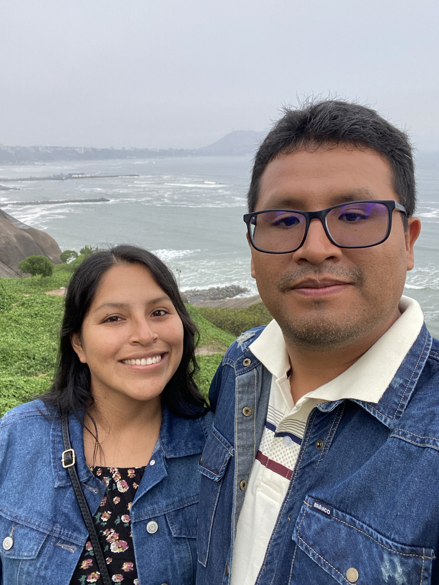

Mi amor:
Quiero decirte que me siento muy emocionado y muy orgulloso de ti por esta nueva etapa que estás comenzando. Sé que para ti no es algo pequeño, porque estudiar Psicología ha sido un sueño que has tenido desde hace muchos años.
Tú terminaste tu secundaria, luego te dedicaste a trabajar, nos casamos y entregaste muchos años de tu vida a nuestro hogar y a nuestra familia. Muchas veces dejaste tus propios sueños para atender otras responsabilidades. Por eso me alegra tanto verte ahora comenzar esta carrera, a tus 38 años, con la misma ilusión que siempre tuviste.
Yo sé que al principio puede ser difícil porque todo es nuevo para ti. Tal vez habrá días de cansancio o momentos en que dudes de ti misma, pero quiero que recuerdes que yo creo en ti. Te conozco y sé que eres esforzada. Sigue adelante y afirma tu corazón, porque sé que lo vas a lograr.
También entiendo mejor por qué desde hace tanto tiempo querías estudiar Psicología. Desde niña viviste situaciones y heridas que te hicieron sentir la necesidad de comprender lo que les pasa a las personas. Pero también he visto cómo Dios ha ido sanando tu vida durante todos estos años. No fue un proceso rápido; ha sido un camino largo, pero Dios te ha restaurado y te ha ayudado a salir adelante.
Por eso creo que no es casualidad que ahora estés estudiando. Yo siento que esto viene de parte de Dios y que también va a complementar mucho el ministerio que compartimos. Hay muchos jóvenes y familias que necesitan ser escuchados y ayudados por las heridas que traen desde la niñez. Ahora podrás prepararte mejor para acompañarlos, no solamente desde tu fe y tu experiencia, sino también desde el conocimiento.
Me siento muy orgulloso de todo lo que has crecido espiritualmente y de la mujer en la que te has convertido. Te admiro mucho, mi amor. Voy a estar contigo en esta nueva etapa, animándote y apoyándote en cada momento.
Te amo mucho.